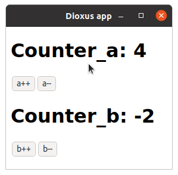

Hooks and Component State
So far our components have had no state like a normal rust functions. However, in a UI component, it is often useful to have stateful functionality to build user interactions. For example, you might want to track whether the user has opened a drop-down, and render different things accordingly.
Hooks allow us to create state in our components. Hooks are Rust functions that take a reference to ScopeState (in a component, you can pass cx), and provide you with functionality and state.
use_state Hook
use_state is one of the simplest hooks.
- You provide a closure that determines the initial value
use_stategives you the current value, and a way to update it by setting it to something else- When the value updates,
use_statemakes the component re-render, and provides you with the new value
For example, you might have seen the counter example, in which state (a number) is tracked using the use_state hook:
#![allow(unused)] fn main() { fn App(cx: Scope) -> Element { // count will be initialized to 0 the first time the component is rendered let mut count = use_state(cx, || 0); cx.render(rsx!( h1 { "High-Five counter: {count}" } button { onclick: move |_| { // changing the count will cause the component to re-render count += 1 }, "Up high!" } button { onclick: move |_| { // changing the count will cause the component to re-render count -= 1 }, "Down low!" } )) } }

Every time the component's state changes, it re-renders, and the component function is called, so you can describe what you want the new UI to look like. You don't have to worry about "changing" anything – just describe what you want in terms of the state, and Dioxus will take care of the rest!
use_statereturns your value wrapped in a smart pointer of typeUseState. This is why you can both read the value and update it, even within an event handler.
You can use multiple hooks in the same component if you want:
#![allow(unused)] fn main() { fn App(cx: Scope) -> Element { let mut count_a = use_state(cx, || 0); let mut count_b = use_state(cx, || 0); cx.render(rsx!( h1 { "Counter_a: {count_a}" } button { onclick: move |_| count_a += 1, "a++" } button { onclick: move |_| count_a -= 1, "a--" } h1 { "Counter_b: {count_b}" } button { onclick: move |_| count_b += 1, "b++" } button { onclick: move |_| count_b -= 1, "b--" } )) } }

Rules of Hooks
The above example might seem a bit magic, since Rust functions are typically not associated with state. Dioxus allows hooks to maintain state across renders through a reference to ScopeState, which is why you must pass &cx to them.
But how can Dioxus differentiate between multiple hooks in the same component? As you saw in the second example, both use_state functions were called with the same parameters, so how come they can return different things when the counters are different?
#![allow(unused)] fn main() { let mut count_a = use_state(cx, || 0); let mut count_b = use_state(cx, || 0); }
This is only possible because the two hooks are always called in the same order, so Dioxus knows which is which. Because the order you call hooks matters, you must follow certain rules when using hooks:
- Hooks may be only used in components or other hooks (we'll get to that later)
- On every call to the component function
- The same hooks must be called (except in the case of early returns, as explained later in the Error Handling chapter)
- In the same order
- Hooks name's should start with
use_so you don't accidentally confuse them with regular functions
These rules mean that there are certain things you can't do with hooks:
No Hooks in Conditionals
#![allow(unused)] fn main() { // ❌ don't call hooks in conditionals! // We must ensure that the same hooks will be called every time // But `if` statements only run if the conditional is true! // So we might violate rule 2. if you_are_happy && you_know_it { let something = use_state(cx, || "hands"); println!("clap your {something}") } // ✅ instead, *always* call use_state // You can put other stuff in the conditional though let something = use_state(cx, || "hands"); if you_are_happy && you_know_it { println!("clap your {something}") } }
No Hooks in Closures
#![allow(unused)] fn main() { // ❌ don't call hooks inside closures! // We can't guarantee that the closure, if used, will be called in the same order every time let _a = || { let b = use_state(cx, || 0); b.get() }; // ✅ instead, move hook `b` outside let b = use_state(cx, || 0); let _a = || b.get(); }
No Hooks in Loops
#![allow(unused)] fn main() { // `names` is a Vec<&str> // ❌ Do not use hooks in loops! // In this case, if the length of the Vec changes, we break rule 2 for _name in &names { let is_selected = use_state(cx, || false); println!("selected: {is_selected}"); } // ✅ Instead, use a hashmap with use_ref let selection_map = use_ref(cx, HashMap::<&str, bool>::new); for name in &names { let is_selected = selection_map.read()[name]; println!("selected: {is_selected}"); } }
use_ref Hook
use_state is great for tracking simple values. However, you may notice in the UseState API that the only way to modify its value is to replace it with something else (e.g., by calling set, or through one of the +=, -= operators). This works well when it is cheap to construct a value (such as any primitive). But what if you want to maintain more complex data in the components state?
For example, suppose we want to maintain a Vec of values. If we stored it with use_state, the only way to add a new value to the list would be to create a new Vec with the additional value, and put it in the state. This is expensive! We want to modify the existing Vec instead.
Thankfully, there is another hook for that, use_ref! It is similar to use_state, but it lets you get a mutable reference to the contained data.
Here's a simple example that keeps a list of events in a use_ref. We can acquire write access to the state with .with_mut(), and then just .push a new value to the state:
#![allow(unused)] fn main() { fn App(cx: Scope) -> Element { let list = use_ref(cx, Vec::new); cx.render(rsx!( p { "Current list: {list.read():?}" } button { onclick: move |event| { list.with_mut(|list| list.push(event)); }, "Click me!" } )) } }
The return values of
use_stateanduse_ref(UseStateandUseRef, respectively) are in some ways similar toCellandRefCell– they provide interior mutability. However, these Dioxus wrappers also ensure that the component gets re-rendered whenever you change the state.